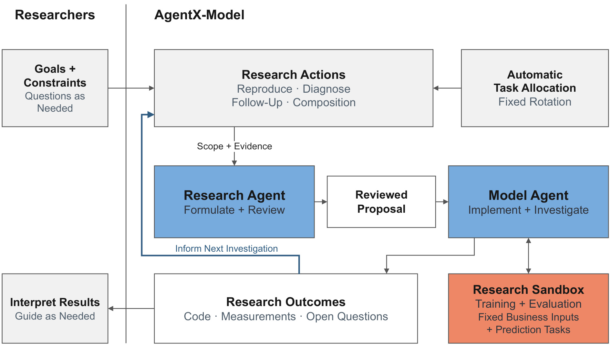
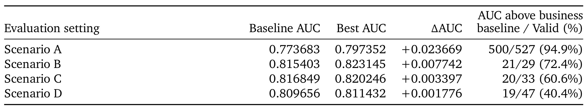
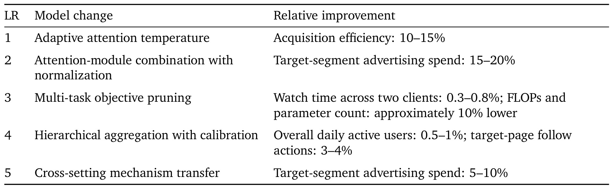
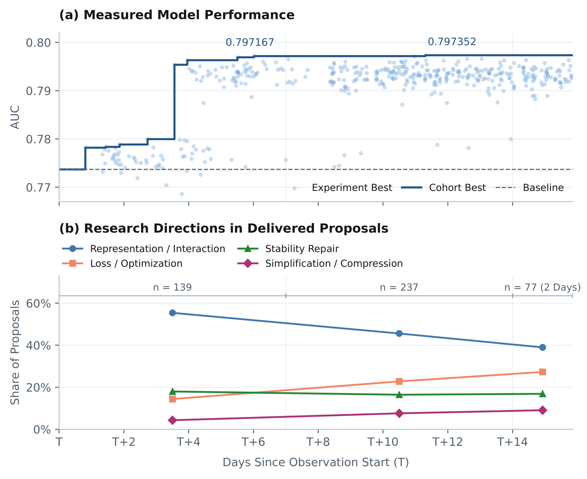
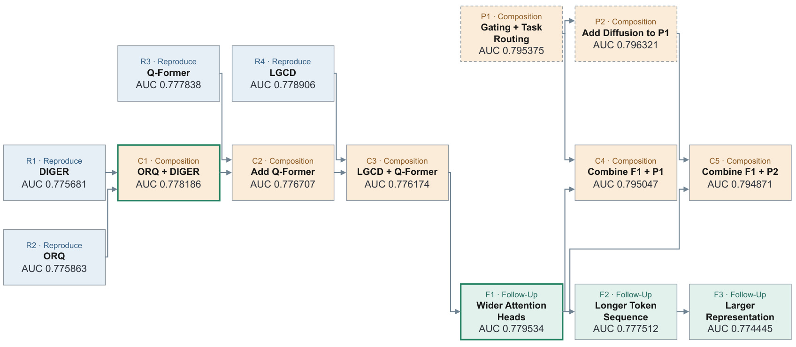
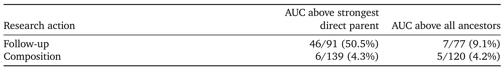
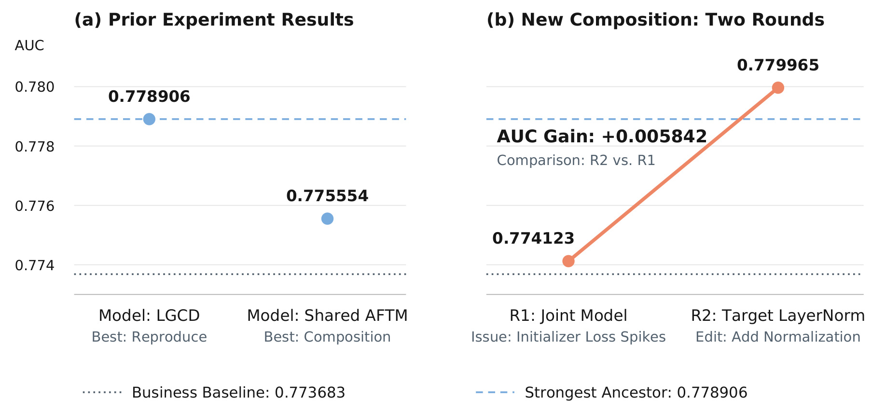
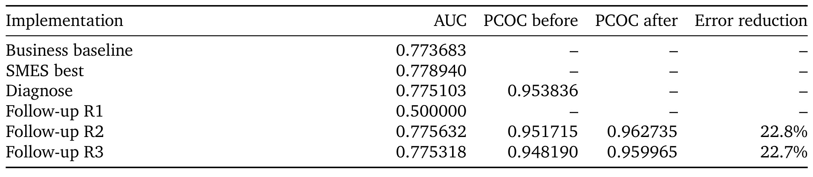
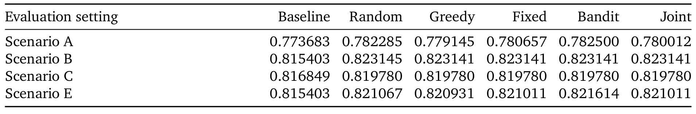
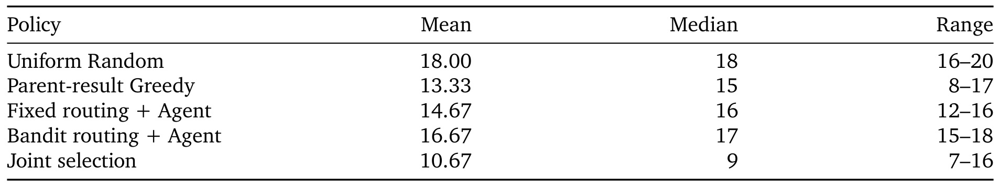

AgentX-Model：让工业推荐研究沿着可核验的实验谱系持续推进
快手 Shuang Yang、Zijie Zhuang、Changxin Lao、Pengbo Xu、Hanwen Xu 等作者在 2026 年 9 月 24 日公开了《Advancing Model Research in AgentX: Long-Horizon Autonomy for Industrial Recommender Systems》。论文入口。本轮未核验到独立代码或项目页。本文的主要贡献是大模型研究 Agent 的持续调查、状态保留和任务分配机制，工业推荐模型是研究对象与验证场景，因此主类别归入 LLM Agent，次级标签为工业推荐、自动实验与经验复用。
持续推进工业推荐研究，需要利用上一次实验的结果决定下一步调查什么。一个有用模型可能出现在中间轮次，组合后的模型可能不如任一来源，而离线排序变好也可能暴露新的业务问题；下一次实验必须明确继承哪份实现、哪些测量和哪些尚未解决的问题。
1. 背景和问题
1.1 从执行一次实验到维持一条研究路径
工业推荐模型不是通过一次论文复现完成升级的。工程师通常先引入一个结构，训练观察结果，再决定改变连接方式、修复不稳定性、延长研究或者终止方向。大模型 Agent 已经可以承担其中越来越完整的片段，包括阅读研究材料、修改代码、提交训练和分析指标。然而，一个片段能够自动执行，不代表多个片段会形成积累。最容易丢失的信息恰恰发生在实验之间：上一轮真正有效的代码是哪一份，下一轮的设计究竟继承了什么，某个结论是在怎样的数据和预测头上得出的，失败尝试是否已经排除了某个解释。AgentX-Model 把这些连接问题放在中心，讨论如何让一次实验的返回结果成为下一次提案的可检查输入。
这和只让模型“继续优化 AUC”的区别很具体。如果实验先得到较好结果，后来为了增加容量而变差，最终文件与最好文件就不同。若自动流水线只记住最后提交，它下一次会从一个较差版本继续；若只记住最高数字，又没有对应代码和测量条件，下一次无法可靠复现这个数字。论文因此同时保留中间实现、测量、失败与未决问题。这里的长期性也不是无限运行，而是在研究者指定目标、约束与资源后，不需要人逐项再次发出实验请求，就能在有限业务沙箱里继续提出和执行研究。
推荐场景特别容易暴露这种信息损失。模型输入由业务特征生产链路决定，标签、预测目标和评估头也带着明确业务含义。一个用于排序的指标改进，不能自动说明用于出价的概率已经校准；另一个业务上有效的模块也不能直接搬到输入和任务不同的模型里。论文的研究沙箱固定业务输入和预测任务，允许 Agent 改变输入表示、交互、路由、骨干、连接、任务塔及允许范围内的损失和优化方式。这种限制使变化仍有较大空间，同时把收益解释绑定在一个可比较的目标上。
此前 AgentX 已经研究过论文驱动提案、多轮模型实验和跨论文组合，相关证据记录工作也讨论过如何把实验结论与代码、测量和适用条件联系起来。本文在这个基础上继续追问：怎样选择下一次实验的起点和问题，并在生产记录中区分继承收益与新增收益。不能把它读成一个凭空产生的新推荐骨干，也不能把使用大模型的两个 Agent 误解成经过新的联合训练。底层语言模型权重保持固定，变化发生在研究提案、模型代码、执行工具、提示指令及经过审核的经验记忆。
1.2 为什么基线、父模型和祖先纪录都需要保留
长期自动实验中最危险的一种统计错觉，是把超过老基线等同于每次实验都取得进步。设一条路径已经从业务基线走到更好的模型，后续即使退步，只要没有退回原点，它仍然会被计为高于基线。组合实验尤其明显：两个来源已经各自有较大收益，组合后保住一部分就能轻松“胜过基线”，但并没有超过较强来源。论文正文直接指出，摘要中的 560/636 不是实验成功率，而是完成且测量有效的模型修改实验中，有多少结果高于对应业务基线。它既不包含全部提案尝试，也没有为每个后续动作扣除继承收益。
因此，论文对继续研究至少保留三个参照：业务基线用于回答最终模型是否对目标业务有价值；直接父实验用于回答这一步是否比所选起点有改进；完整可比祖先中的最强结果用于回答整条路径是否刷新纪录。这三个问题都合理，但不能相互替代。一个修复如果把退化版本恢复到接近此前最好水平，可能具有工程价值，却不能被统计成新的路径纪录。反过来，诊断实验虽然不直接提高 AUC，但如果区分了校准偏差的原因，就可能为下一次修复提供不可缺少的信息。
另一种常见误读是把“复现”理解成忠实照抄整篇论文。业务输入无法任意改造时，很多机制只能做限定范围的适配。例如原论文依赖用户行为图或跨域标签，当前业务可能只提供已有特征 token 或语义向量。Research Agent 需要明确保留的计算机制、被移除或不适用的部分，以及怎样在当前任务里测量它。只有先描述这种差异，Model Agent 才能实现一个有确定假设的实验；否则得到正指标以后，也不清楚究竟验证了原方法的哪一部分。
研究自动化还受到资源和依赖约束。组合候选必须先拥有两个来源实验的可用结果，跟进候选必须有起始实现和有证据支持的问题。一个调度器很想做组合，并不意味着当前可以执行组合；它可能必须先完成两条分支中的另一条。论文把这种候选可用性纳入历史回放，避免把所有实验当成一开始就能自由抽取的独立彩票。这让研究选择更接近真实工作，但也意味着回放只能讨论历史上已经走过的路径，无法测量一个策略创造历史上不存在的新组合的能力。
本文值得关注的地方，是把这些很容易被成功案例掩盖的边界公开化：既给出规模化生产结果，也展示组合退化、校准失败、未被解锁的候选以及复杂调度没有稳定收益的结论。对读者而言，重点应放在证据链是否支持持续决策，而不是用某个高比例推断系统已经可以替代完整研究组织。人依然定义研究目标、解释业务结果，并控制上线等部署门槛；这种自治是特定职责范围内的连续运行，而不是取消业务责任和验收约束。
论文还区分了研究记录与执行过程的改进：模型实验形成的是推荐模型知识，反复报错形成的则可能是工具分类或指令缺陷。修复后者必须重新验证工具决定或新生成计划，不能把一段经验加入记忆以后就默认下一次研究更可靠。这个区别使研究系统能够指出具体变化发生在哪里，以及应该用哪类输出评价它。
2. 方法
2.1 业务沙箱与双层研究接口
Research Agent 负责跨实验规划，Model Agent 负责单个实验内部的多轮调查。 前者把论文、业务反馈和历史记录变成一个研究问题，后者紧贴实现、训练行为和测量结果。两个时间尺度分开以后，跨路径比较不必把所有训练日志留在一个不断膨胀的上下文中；而局部实现仍能连续追踪编译、结构验证和数值问题。二者交换的核心是提案，不是“请改好模型”式指令。原文式（1）给出接口：
符号解释：$P_t$ 是第 $t$ 次提案，$q_t$ 是研究问题，$s_t$ 是起始实现，$\delta_t$ 是拟议修改或诊断干预，$v_t$ 是评估设计，包含参考结果和成功判据。这个元组不是训练目标，而是把代码修改与可验证问题绑定的任务契约；漏掉评估头或者引用了错误起点，都会使实验即便跑通也无法回答原问题。

Figure 1 左侧是研究者，负责目标、约束和按需提出的问题，竖线右侧才是自动运行的研究闭环。右上角的自动分配模块只提供动作类型；它没有直接发出任意模型改动，而是先进入中间的研究动作与范围。蓝色 Research Agent 方块接收范围和证据，输出经过审查的提案，之后 Model Agent 才在右下角固定输入和预测任务的研究沙箱里实现、训练与调查。这条水平链路解释了为什么拆成两个 Agent：研究问题的形成与代码实现的细节没有被混为一个不可检查的连续回复。
图中最重要的蓝色返回箭头来自下方研究产物框，里面同时列出代码、测量和未决问题。若返回内容只有“这次提升”，下一轮无法判断是否应该从某个中间轮继续，也无法设计区分原因的诊断；三类内容一起返回，才使后续提案有明确证据。研究者也收到结果并可继续指导，因此返回并不绕开人，而是在既定范围内减少人逐次派活的需求。图右侧的训练双向箭头说明 Model Agent 要观察实验，而不是生成代码即结束。它可能在一个提案内进行多轮本地修复，这和上方重新生成下一个研究提案是两层不同循环。
读图时还要注意沙箱的两个固定条件：输入与预测任务。Agent 可以调整表示、路由、骨干或损失，但不能通过偷偷更换标签来获得不可比的好指标。图没有规定所有节点必须由不同基础模型完成，也没有表达两个 Agent 的梯度联合训练；生产实现中双方使用私有部署的 GLM-5.2，只是运行时和上下文职责不同。Research Agent 使用 Pi，Model Agent 使用 Claude Code 并提交到 KML。作者后续处理历史数据与回放时使用 GLM-5.3，所以生产观察和回放不能被视为完全相同的软件实验。整个图支持的是一个带明确边界的研究组织方式，而不是双 Agent 本身带来多少净增益的消融证明。
Research Agent 内部还有 Assembler 和独立上下文的 Auditor。前者查材料并形成提案，后者检查修改、起始实现和评估是否能够回答问题；若不充分就要求修订，仍无依据则延期。交付前的来源和版本检查把执行绑定在审核过的提案上。Model Agent 先写计划，再编码、自检、冒烟测试与独立核验，核验结论本身也要有代码和可观测量支撑。修复预算耗尽的轮次保留失败记录，不直接推进训练。这些约束针对的是“看似实现却没实现机制”的失真，和仅测试代码可运行并不相同。
2.2 用共享状态继承代码，并分开三个比较参照
原文式（2）把每轮返回积累成共享研究状态：
符号解释：$S_t$ 是时刻 $t$ 的研究状态，$\mathcal I_t$ 是实现集合，$\mathcal E_t$ 是关联测量与比较条件的发现，$\mathcal Q_t$ 是尚未解决的问题。实现和证据同时带有业务场景、基线版本、预测头与评估上下文。它不是只有自然语言摘要的记忆池，而是能重新访问结果背后代码的状态集合。
保留轮次粒度是这一状态的关键。原文式（3）只在有效且评估条件相同的轮次中取最好记录：
符号解释：$b_i$ 是实验 $i$ 的最好测量结果，$\mathcal V_i$ 是该实验具有有效可比测量的轮次集合，$\operatorname{AUC}_{i,r}$ 是第 $r$ 轮的排序指标。失败轮不能被填成任意数字参与最大值；最好轮也不等同于最后轮。选择最好值适合保留候选，但多次选择最大值会受到测量波动影响，部署前仍需重复与线上验证。
原文式（4）随后明确三种增益：
符号解释：$b_{\mathrm{base}(i)}$ 是实验对应业务基线的 AUC，$\mathcal P_i$ 是可比直接父实验集合，$\mathcal A_i$ 是包括父实验在内的所有可比祖先，三个 $\Delta$ 分别表示相对业务基线、最强直接父代和整条路径历史最好结果的差值。后两者只有证据齐全时才报告；路径比较需要完整祖先，因此其分母通常更小。一个退化后的修复可能使第二项为正、第三项仍为负，这正是不能只看父代改善的原因。
起始代码和评估参照是两个独立选择。 校准修复可能必须继承诊断版本，以保留暴露问题的观测入口，却同时要求维持更早模型的排序收益。把二者压成同一个“baseline”字段，会逼迫 Agent 在正确诊断起点和正确收益约束之间错误二选一。共享状态还保留完整有效改动：若实验从 $A$ 变成 $A+B$，数据仅支持该联合模型在当前条件下的结果，不能自动把提升全部归给 $B$。这种归因规则直接服务下一次组合，防止重复叠加已经共有的模块。
2.3 四种研究动作与证据约束的调度
Reproduce 从论文引入一个机制，在当前业务输入和目标下适配；Follow-up 继承有测量结果的实现，围绕一个明确弱点或改进机会继续；Composition 检查多个来源相对公共基线的完整有效变化，公共部分保留一次，冲突必须选择，剩余独立贡献才进入联合实验。Diagnose 的目标则是降低不确定性：当多个原因都能解释异常时，通过新增观测或受控干预决定下一步修什么。四种动作共享提案和执行接口，但不能共享一个简单的即时 AUC 奖励。诊断不涨分也可能完成任务，基础设施失败则不能凭空成为自动性能跟进的起点。
调度层与具体候选选择同样分开。生产的人工设计规则分配动作类型，Research Agent 再读共享状态、论文和业务反馈，选择来源、起始实现、问题与评估；证据不够可以延期。历史回放中的 Fixed 按 Composition、Follow-up、Follow-up、Reproduce 循环，跳过不可用类别，类别内部仍由 Agent 选具体实验。Bandit 用 Thompson Sampling 和 Beta(1,1) 先验适应分配类别，其奖励是刷新已揭示有效 AUC 的严格最高记录；Joint 让 Agent 联合选择类别和具体候选。三者的差别是分配方式，不是 Fixed 完全不用 Agent。
回放图里的节点是完整实验，边是历史前置依赖。跟进需要来源已选择，组合需要多个来源全部选择；一次选择消耗一个预算并揭示该实验的历史轮次反馈。选择之前可见不透明候选 ID、动作、已揭示父节点链接，以及候选第一份实现、改前代码和 diff；看不到原提案正文、后验报告、测量和后续修改。这种设计抑制直接从结果文本偷看答案，但候选空间仍来自历史实际执行的研究，带有原有选择偏差。它适合比较在既有机会集里怎么花预算，不代表真实在线探索所有未知架构的能力。
2.4 实现检查、流程修复与推荐机制适配
局部执行检查和共享工具修复是不同通道。反复出现的失败会按确定性签名聚合，修复 Agent 在隔离空间检查代表记录与部署代码，提出受限修改。分类器修复要对相同归档输入做前后回放，同时保留正确控制样本；提示指令修复则必须让旧版和新版重新生成计划，不能只拿旧计划重判。工具与记忆候选经过人审核后才进入后续生产，这是论文原系统的部署设计。语言模型权重并未改变，因此这里的自演化具体指工具、检查器、提示和经验的更新。
校准诊断用到原文式（5）：
符号解释：$\hat y_n$ 为样本 $n$ 的预测值，$y_n$ 为观测标签，求和在相应评估样本上进行。比值高于一表示总体高估，低于一表示总体低估，它不等价于 AUC。后续用训练数据估计原文式（6）的修正量：
符号解释：$\mathcal T$ 是预热后积累的训练样本，预测取新修正之前的输出，$c$ 是乘性纠偏因子。它被施加到额外评估输出，不拟合测试标签，也不改变已有推理输出。这避免把测试集校准直接冒充可上线方案，但训练统计在未来流量分布改变后是否持续有效仍需验证。
附录的 Mem-GF 适配展示“论文机制进入沙箱”的具体含义。原方法处理物品图，而适配把当前样本的特征 token 当节点，双轴重标定与归一化后以隐式内积算子进行 Krylov/Lanczos 多项式滤波，用 token 范数产生调制信号。原文式（7）为：
符号解释：$H_i$ 是原始特征 token，$\bar H_i$ 是重标定后的 token，$s_i$ 是滤波得到的标量，$H'_i$ 是残差融合并归一化后的表示。此分支没有新可训练参数，却能随样本关系改变输入方向。它在场景 E 报告从 0.815403 到 0.820512 的测量结果；这只是一个推荐适配样例，不能归因成主 Agent 架构的独立收益。另一个 TokenMinds 适配以连续 token 为查询和键、离散原型为值融合，并保留原 token，但它来自人工指定请求且已属于 D 的基线，不能再计作本轮自动研究新增成果。
3. 实验结果
3.1 生产口径与离线增益
先把样本集合分开。提案生产观察覆盖最近十天，有 886 次尝试、262 份交付；初始冻结快照里可获取执行记录的 200 份交付中，198 有 Model Agent 输出，177 有可验证测量。提案耗时中位数为 33.6 分钟、九十分位数为 49.9 分钟，不含后续排队训练。离线模型收益则来自约二十五天的 636 个已完成模型修改实验，排除了 Diagnose。继续研究档案是另一份冻结集合，包含 1218 个实验、923 个有效结果。多轮比较的 189 例要求至少两轮有效 AUC，不能把这些不同筛选口径当成同一张漏斗直接相除。

Table 4 每行给出业务设置、基线、最高测量 AUC、最高值相对基线的绝对差，以及高于基线的有效实验数。A 从 0.773683 到 0.797352，差值为 0.023669，500/527 超过基线；B 为 0.007742、21/29；C 为 0.003397、20/33；D 为 0.001776、19/47。四行相加恰好是 636 例与 560 例，但这是带有效测量的完成集合，不是所有尝试，更不是每个动作的独立成功概率。表注还规定超过阈值为一百万分之一，用来避开四舍五入相等，不是统计显著性的检验阈值。
不同场景的差距相当明显。A 的基线较低、研究历史较长且含大量继承，D 的起点经过更充分优化并且单次实验成本更高，所以不能简单据此给 Agent 在四个“数据集”的能力排序。B、C、E 实际是第三类业务下不同基线代码版本，A 和 D 才分别对应另两个业务设置；同样的基线数字也不保证同样代码。最高值对应的修改也不同：B 扩充专家池并改变路由和负载均衡，C 限制 token 组间信息流并增加补偿路径，A 延续已有去噪、门控、专家路由后修正成对排序损失尺度，D 修复熵正则中的温度归一化以处理码本坍缩。表格证明系统能够产出有益候选，却没有隔离双 Agent、审核或记忆各自贡献。
还必须把 AUC 的变化和测量噪声一起看。作者固定随机种子重复执行，A、B/C/E、D 的实现内合并标准差仍分别为 0.002208、0.001010、0.001099。固定种子不能消除训练平台与执行过程的一切变异，因此表中的若干千分之一甚至更小差值不能只凭单次最好测量就断言稳定优势。最大值统计还会随尝试数量增大而上移，A 的 527 例与 D 的 47 例并非公平的预算对照。更稳妥的解读是把较大且重复可验证的离线差值用于优先排序，再通过线上实验评估业务结果，而不是把所有略高于基线的点等价计作可靠发现。
按动作拆分的 Table 5 进一步显示继承混杂：A 的 Composition 有 302/308 高于业务基线，比例达 98.1%，但其“刷新祖先纪录”的比例远低于此；D 的七次论文驱动 Reproduce 没有高于基线，十六次 Knowledge Transfer 中五次高于基线。后者是提案来源类别，进入后仍使用同一审查和执行流程。不同历史时期和研究难度没有匹配，不能由这张表推出组合天然优于复现，或者经验迁移天然优于读论文。
3.2 五次线上评估说明了什么

Table 6 每行是不同 Launch Review 的模型改变与相对控制组收益，作者刻意使用粗范围。LR1 的自适应注意力温度对应获客效率提升 10%–15%；LR2 的注意力模块组合与归一化对应目标人群广告消耗提升 15%–20%；LR3 删除线上预测不用的辅助训练目标，两个客户端的观看时长提升在 0.3%–0.8%，同时参数和 FLOPs 约降低 10%；LR4 的层级聚合与校准对应整体日活提升 0.5%–1%、目标页面关注行为提升 3%–4%；LR5 的跨场景机制迁移对应目标人群消耗提升 5%–10%。这些是相对改善，不能读成百分点，业务分母也不相同。
这张表对论文价值的支持在于，部分自动研究产物确实进入了有业务对照的后续评估，且提升不只表现为离线 AUC；LR3 还提醒读者，研究有时应删去无用训练路径，而不是持续堆大模型。但表中没有完整流量比例、实验时长、统计置信区间与业务口径细节，因此外部读者只能按作者报告接受这些区间，不能从范围中进一步估计总收入或综合收益。五个实验横跨不同设置，尤其不能把 LR2 和 LR5 的消耗提升相加，也不能把获客、观看和日活当成一个共同目标的累计成绩。
更重要的是，表格并没有同时运行一个具有相同预算、相同基础模型但没有双层研究状态的对照系统。因此它支持“这个系统产出的部分模型具有线上价值”，不能支持“这些线上收益完全由所提出的 Agent 组织方式导致”。人设置约束、业务团队审核、既有训练平台和模型历史都属于真实生产过程的一部分。部署门槛仍由人控制的设定也意味着，系统论文中的自治范围止于被允许的研究和后续受控流程，而不是让 Agent 无条件把每个离线正结果发布出去。对于计划复用这一框架的团队，应该先复现它对代码、测量和目标的绑定，再根据自己的上线标准验证收益，不能直接把这些业务区间当成可迁移的预期。
3.3 研究轨迹：保住已有收益与刷新纪录相差很大

Figure 3 上半部分的横轴是观察开始后的天数，纵轴是 AUC，浅色点是实验内最好测量，蓝色阶梯线是该观察队列累计最好结果，虚线是业务基线。它覆盖 A 场景最后十六个自然日交付的 453 份提案，其中 317 个 Composition、136 个 Follow-up，432 个产出有效完成结果。曲线在第六天达到 0.797167，第十一天只再提高 0.000185 到 0.797352，随后维持。这说明后期实验依然密集，却不再频繁刷新纪录；散点多数高于基线不等于每个点都推进了最优前沿。
下半部分是交付提案的主要研究方向占比，而不是成功实验比例。作者让语言模型基于新提出的改动进行分类，不按继承模块命名；七个方向只画出四个。表示与交互从 55.4% 降到 39.0%，损失与优化从 14.4% 升到 27.3%，简化从 4.3% 升到 9.1%。这些数据提示研究目标从结构探索逐渐转向训练和成本问题，但不能证明这种转移是自动发现最优策略的结果。三个区间的样本量分别为 139、237、77，最后一个只跨两天，趋势线很容易让人误以为每段长度和统计稳定性相同。
还应注意，上半部分按结果汇报时间放点，下半部分按交付提案统计，训练延迟会使两者不严格同步。队列中的实验可以继承窗口开始之前的实现，所以曲线不是从零研究十六天的纯增益轨迹，也不能把最早阶段的跳升全部归因到当日新探索。图真正有说服力的地方，是把“很多实验还在进行”和“最好指标接近平坦”同时展示，让后续研究效率问题有了现实背景。若仅报告最后最好 AUC，就看不到继续扩大实验数量的边际收益与方向变化；若仅数正实验，也会掩盖路径前沿已经停滞的事实。

Figure 4 用节点表示实验、箭头表示继承，节点数字是该实验的最好测量。最初的 DIGER 与 ORQ 分别为 0.775681 和 0.775863，组合 C1 达到 0.778186，绿色边框标记它超过自己的可比祖先。加入 Q-Former 后 C2 只有 0.776707，随后 LGCD 与 Q-Former 的 C3 为 0.776174；这两步并没有因为组合了更多机制而继续提高。Follow-up F1 调宽注意力头后达到 0.779534，再次出现绿色边框。但继续增加 token 长度的 F2 降到 0.777512，增加表示容量的 F3 进一步降到 0.774445。图中完整保留退步分支，使“最好实现不等于最后实现”成为可见事实。
右上方另一路的 P1、P2 已分别达到 0.795375 与 0.796321。把 F1 与它们结合形成 C4、C5 后，结果为 0.795047 和 0.794871；虽然它们远高于最初业务基线，也远高于 F1，却分别低于较强直接父代 0.000328 和 0.001450。因此读组合效果必须同时看所有输入来源，不能只选较弱那个做对照。虚线框简写了另一路更早的祖先，并不是没有历史依赖。图跨约十一天，展示的是研究路径摘录，不是随机采样的十四例总成绩，不能用其中绿框占比替代总体统计。
对于实现管理，这张图要求保留分支而不是一条不断覆盖的主文件。F2、F3 的失败没有理由抹掉 F1 的可用代码，C4、C5 的高绝对分数也没有理由把 P1、P2 的作用归给新加入的成分。作者用绿色边框只标路径新高，实际上给后续论文与日报提供了更严格的语言规则：可以说某个联合模型高于业务基线，但只有超过最强可比来源才说组合带来了新纪录。图没有排除测量方差的影响，因此绿色仍是“测得的新高”，并非每一个都已完成独立重复的显著性证明。
图里 F1 同时通向跟进和组合，也说明共享研究状态必须支持同一实现被多个后继引用；仅保存一份最新分支名称无法表达这种多来源依赖，容易遗漏比较时应纳入的较强祖先。

Table 7 把上述区别在 A 场景的继续研究档案里量化。Follow-up 有 46/91 高于最强直接父代，看起来接近一半；但祖先齐全的 77 例中只有七例超过全部祖先，为 9.1%。Composition 的父代比较是 6/139，即 4.3%，祖先比较则是 5/120，即 4.2%。两列分母不同，因为完整祖先证据比直接父代证据要求更多，不能用 46 减七就说其余三十九例全是退化恢复，也不能把两个百分比当作同一批样本的前后转化率。增益阈值同样是一百万分之一，只处理舍入相等。
这张表给摘要中的 560/636 加上了必要约束：系统能长期维持许多优于老基线的模型，并不说明每个继续实验都提供了独立进展。尤其是组合，本就需要同时保留多个来源的强处并解决冲突，胜过强父代比胜过基线困难得多。这个低比例并不自动否定组合的价值，因为少数成功可以成为重要起点；它说明研究分配应关注机会成本与依赖结构，而不是凭“组合两条成功路线”的直觉保证收益。论文没有提供统一训练成本下各动作的严格随机对照，因此从比例到最优资源配置仍有距离。
同一段落中的多轮子集也支持保留中间代码：189 例中 111 例在第一轮有效结果之后测得更高 AUC，91 例的最后有效轮低于此前最好轮，占 48.1%。两组允许重叠，一次实验可以先改好再改坏，所以不能把它们相加当互斥分类。这里的最后只指最后一轮有效测量，不把随后失败的尝试算成任意低分。工程上至少需要并存最好实现、最后状态和失败日志，否则一个继承系统既可能丢掉最好模型，也可能因为只看最好模型而反复重试已经失败的方向。
3.4 组合失败之后，局部调查怎样使它变得可用

Figure 5 左侧两点是两个直接来源实验的最好结果，并不是新组合的第一、第二轮。LGCD 来源为 0.778906，共享 AFTM 来源为 0.775554；右侧才是新组合的两轮，第一轮 0.774123，第二轮 0.779965。图把来源与实验内部修订分栏非常必要，否则读者可能把四点连成一个持续提升序列。虚线分别给出业务基线 0.773683 和最强祖先 0.778906，只有第二轮同时越过它们。第二轮比第一轮增加 0.005842，而比最强祖先增加 0.001059，这两种增益回答的问题不同。
机制上，LGCD 被适配为根据业务用户特征生成语义向量，用已有语义嵌入做训练目标。推理路径经过初始状态预测器与短反向扩散链，再融合回排序模型；反向链与排序损失梯度分离。AFTM 来源的最好轮已经关闭额外的流量专用分支，Research Agent 因而只选择其共享混合机制，而不是携带整套第二模型。由于 LGCD 替换了原来的量化路径，旧 AFTM 插入位置不存在，组合把混合操作移到去噪器，用带 SiLU 的状态相关门控替代原交叉注意力。这是围绕接口冲突重新设计组合，而非把两个模块顺序拼起来。
第一轮报告扩散初始化器的损失尖峰，Model Agent 对每个扩散目标 token 加入无仿射参数的 LayerNorm。作者对两轮代码差异核对后，确认这是唯一实现改变；第二轮报告更小的尖峰并达到更高分。这是全文较清楚的局部“观测—假设—修改”链条，说明失败的初始组合可能暴露可修复的训练问题。但唯一代码差异并不能消除重跑方差，第二轮相对祖先的千分之一优势仍需要结合 A 场景约 0.002208 的重复测量波动判断。较稳妥的结论是这次调查找到一个有希望的可运行联合实现，而不是据此证明目标归一化在所有扩散推荐组合中必定产生该幅度提升。
另一个 ORQ 与 DIGER 组合修改的是量化器内部的选择与更新：保留旋转、渐进压缩和残差传播，对历史高频使用的码加入 Gumbel 探索，前向选单码而梯度走软分配，软统计参与指数移动平均更新；推理取消探索噪声。完整实现加上辅助损失的数值保护后达到 0.778186，相对较强父代为 0.002323。附录同时披露维度硬掩码不向打分网络回传该操作的梯度，提醒读者适配并不意味着完整保留来源论文的所有训练机制。
3.5 从排序收益转向校准问题

Table 8 的前三行依次是业务基线、SMES 最好结果和 Diagnose，后面三行是同一补丁的 Follow-up 执行。SMES 曾将 AUC 从 0.773683 提到 0.778940，但业务反馈指出概率偏差，研究目标因而转向在保留排序价值的同时改善校准。Diagnose 把校准损失权重从一加到十，并使用直接 SMES 替换；其学习到的 log-bias 仍在约负零点一附近，接近此前负零点零九，测试 PCOC 为 0.953836。这个现象让调查转向校准统计，而不是继续盲目增大权重。
后续提案用训练统计计算乘性因子，审查过程中还曾发现草案选错预测任务，要求显式继承原任务和诊断实现。第一轮训练崩溃，AUC 只有 0.5；保持代码不变复跑后，第二、第三轮分别得到 0.775632 与 0.775318。表中校准前后是同一次运行的两个输出，不是两个独立训练模型的对比。第二轮 PCOC 从 0.951715 到 0.962735，第三轮从 0.948190 到 0.959965，对应相对绝对校准误差下降 22.8% 与 22.7%。改善后仍小于一，因此不能写成完全校准；两次 AUC 仍高于业务基线，却低于早期 SMES 最好结果，因此也不能写成完整保住了全部排序收益。
这个案例的价值在于让目标变化有证据来源。诊断的即时产物不是最高 AUC，而是发现单纯增加损失权重没有继续推动纠偏参数，从而提出统计型修正的调查方向。作者明确没有用测试标签估计因子，也没有直接更改既有推理输出；这是一项离线修复观察，不能与 Table 6 的线上结果混写成“该补丁已经解决线上偏差”。第一次崩溃和后续相同代码健康运行还说明，报告失败原因时要区分代码机制与执行随机性，否则可能把一次环境或训练异常当成否定整个方向的证据。排序和校准需要联合验收，业务目标的引入让研究更接近真实使用，也让成功标准比单一指标更复杂。
3.6 依赖回放没有证明复杂调度普遍更高效
回放包含六个环境、473 个节点：A 有 348，B 有 26，C 有 21，E 有 69，D 的两个小图分别三和六。A/B/C/E 上五种策略各重复三次，共六十次；D 只评 Random 与 Greedy，各三次，共十二次。每次最多选二十个实验，在五、十、二十次设检查点。目标为首次达到严格超过基线加 0.001 的有效 AUC，但六十次大图运行全部达标，其中四十六次第一次就达到，说明这个门槛在这些图里区分力不足。D 图连最高历史值也达不到阈值，不能把十二次未达标归咎于策略能力。

Table 10 的每个单元格是三个重复在二十次选择后的最好 AUC 均值，不是选中实验的平均 AUC。基线和评估条件按行变化，跨行直接比较绝对分数没有意义。A 中 Bandit 为 0.782500，Random 为 0.782285，Fixed 为 0.780657，Joint 为 0.780012；E 中 Bandit 也较高。但 A 的 Bandit 均值明显受到单次达到 0.788360 的影响，三次重复样本标准差为 0.005092，远大于几个策略均值之间的细小差。B 里 Random 与其他策略只差百万分之四，C 五种策略完全相同。因此没有哪一种分配方式在所有环境稳定领先。
Fixed 仍然让 Agent 在指定类型内检查代码和选择候选，不能据表宣称“无需大模型”。正确比较是：在已经有 Agent 选具体实验的情况下，再引入自适应类别分配或联合选择，是否值得额外复杂度。Random 和按父代结果选择的 Greedy 不消耗语言模型调用，是有意义的低成本参照。三十六次 Agent 回放共约四百三十分钟，其中 Fixed 约一百二十四分钟、Bandit 一百五十七分钟、Joint 一百四十九分钟；计量 token 共九千七百五十万，其中八千六百七十万为缓存读取。这里是回放决策成本，不包括历史训练成本，不能用它计算端到端 GPU 节省。
图规模也影响解释。C 只有二十一个节点，二十次预算几乎穷举，终点一致完全可能由覆盖率决定；A 虽然有八十三个组合节点，十五次运行里却没有选择任何组合，九次 Agent 运行更是没有一个组合变得合法，因为来源依赖未全部满足。这揭示简单偏好某种动作无法解决候选未解锁的问题。未来调度可能需要考虑某次实验的后继机会价值，但这仍是论文提出的研究问题，不是已经被实验验证的新算法收益。回放仅包含实际历史分支，无法知道策略若主动创造新方向会怎样。

Table 11 把 C 图上相同终点的路径成本拆开。五个策略都在二十次内达到 0.819780，但 Joint 平均用 10.67 次，Fixed 用 14.67 次，Random 用 18 次，Greedy 用 13.33 次，Bandit 用 16.67 次。行内同时给出中位数与范围：Joint 的范围为七到十六，Fixed 为十二到十六，Random 为十六到二十。相同终点因此不能说明调度效率一样；在这个小图上，联合选择确实更早找到那个组合。不过每行只有三个重复，且结果是事后选定的共享终点比较，不足以推断所有环境都有四次左右的节省。
那个最高点本身是两次 Reproduce 的组合，两来源分别为 0.818920 和 0.819011，均高于 0.816849 的业务基线。理论最少三次选择就能完成两个来源再选组合，而实际十五次运行需要七到二十次。这个差距把问题从“能否识别高分父节点”推进到“怎样选择互补且共同解锁后继的来源”。只追逐一个目前最强的父节点，可能一直停留在一条分支，永远缺少另一个必要来源；反过来，一个即时收益一般的实验也可能具有较高后继价值。这是依赖图回放相比独立抽样更有解释力的地方。
作者还在一百二十个检查点事后分析未选更好结果是否可在剩余预算内到达，一百一十个仍存在这样的机会，其中十九个之后没有刷新纪录；其余十个没有更好的可达历史结果，没有检查点仅仅因为未完成依赖的成本而预算不足。此分析使用隐藏结果，是评价工具而不是策略当时能够读取的额外信息。它说明平坦曲线可能来自错过机会，也可能来自历史候选池上限，必须区分；同时，最短依赖成本没有算固定轮转可能插入的额外选择，不能直接当实际策略最优运行时长。
3.7 迁移、摘要与指令更新属于三种不同证据
跨场景迁移把低成本业务里已测得的代码变化压缩成带条件的指导，再在更昂贵的 D 场景基线上适配与审查。可验证入口代码且预测头一致的历史比较中，论文驱动七例没有高于基线，知识迁移十五例中五例高于基线，最大增量 0.000789。这个十五例比生产汇总十六例少一例，原因是有一例无法验证起始入口文件内容。两组来自不同时期且没有匹配实验预算，因此它是探索性现象，不是迁移相对于论文复现的严格因果优势；其意义在于迁移可以提供新的候选起点。
给回放选择器额外摘要是另一种用法。作者固定 Joint，比较可访问原代码和 AUC，与在此基础上再增加摘要。A/E 每个环境使用六个开发实验形成三份来源审查摘要，两批分别强调操作性建议与比较条件。摘要产生者不看目标结果，但来源审阅者知道先前同目标图回放结果，因此审阅不是盲的。A 初始批有一对摘要条件在十八次超时，被排除出完整二十次比较。E 的摘要减少了非正增益选择，A 则有不变或变差；终点 AUC 和到达速度均没有一致改善。不能把“摘要更容易读”自动等价成“选择更好”。
附录指令修订研究的是计划质量，四十个此前失败曾启发修订的固定输入，各用新旧指令生成一份新计划。结构通过率从 37.5% 到 95.0%，语义忠实度从 72.5% 到 95.0%，未承认机制遗漏从四例到零。它支持当前回归批次上的初稿质量改善，但因为输入与修复开发有关，不是独立泛化测试，也不是模型 AUC 提升。三条经验复用途径分别产生研究想法、选择决策和实现计划，应分别用目标场景效果、路径成本与新生成输出检验，而不是统一用“记忆有效”概括。
4. 总结
4.1 我的判断
AgentX-Model 最有复用价值的是把持续研究拆成明确的证据接口：一个提案同时包含问题、起点、修改和评估；一个返回状态同时保留实现、测量与未决问题；一个收益同时明确业务基线、直接父代和完整祖先。这样的结构能让研究继续时少依赖模糊叙述，也允许诊断改变下一步问题。它没有提出一个通用最优调度器，反而用历史回放承认固定轮转加 Agent 候选选择仍有竞争力。对工业团队，这种承认非常实用：先把实验记录和比较条件做好，比直接加入复杂分配策略更容易形成可验证改进。
我尤其认可把最好轮与最后状态分开保留。模型优化不是单调过程，最后一次尝试可能失败，但失败包含新的认知；最好实现可以部署候选，最新失败可以指导下一次调查，二者都不应相互覆盖。进一步的工程实现应把每个结果关联到可定位代码、预测头、样本人群、基线版本和测量过程，让提案审核能够自动发现目标漂移。校准案例里 Auditor 捕捉了错误预测任务，说明有些高价值检查并不依赖更强的创造力，而依赖把原问题和新实现放在同一张可检查记录上。
4.2 局限与后续研究
第一，生产统计是观察性证据，没有相同预算下的完整系统消融；因此无法分离双 Agent、独立审核、既有平台与人工业务选择分别带来的效应。第二，多轮取最好值与不等尝试数量带来选择偏差，固定随机种子仍有明显方差，尤其需要谨慎对待千分之一左右的路径新高。第三，线上只公布粗区间和模型变化，外部无法核对统计显著性和全部业务守护指标，也不能复现内部数据设置。第四，历史回放受已执行分支限制且图规模很不均衡，C 近似穷举、D 无可达目标，限制了跨策略结论。第五，知识迁移分组不同时期且预算不匹配，摘要审阅非盲、指令回归使用曾启发修复的输入，三者都不能被扩大为无条件经验复用有效的结论。
后续首先应做成本匹配的重复验证：把独立训练成本、失败率和测量区间纳入，而不只比较二十次历史选择后的最好值。这样才能判断一个偶尔得到高分却昂贵的策略是否真值得部署。其次，应研究显式依赖价值的分配机制，并在隐藏后验结果的前提下比较它与 Fixed；A 中组合从未合法，说明后继解锁是具体痛点。第三，应为诊断设计不同于即时 AUC 的评价，测量它是否减少后续修复尝试、提高业务约束通过率；否则最需要解释问题时，调度器可能系统性低估诊断。第四，应建立独立业务与时间段的经验迁移测试，让来源条件、目标适配和失败理由都可核验，避免摘要把局部联合收益压缩成普适技巧。
复用本文时可以先从一个业务沙箱和少量动作开始，确保自动提案不改变标签含义，所有轮次测量都能回到对应代码，基线比较与祖先比较各有独立字段，再逐步增加组合和跨场景来源。这个建议是基于论文证据的工程判断，不是作者已经完成的跨公司效果验证。最后应保留论文里同样清楚的反例：组合有时退步，重复运行会波动，校准改善仍可能未达一，复杂调度可能没有净收益。能把这些结果沉淀成下一次可检验问题，比把它们从自动化成功率中删除，更接近可持续的研究能力。